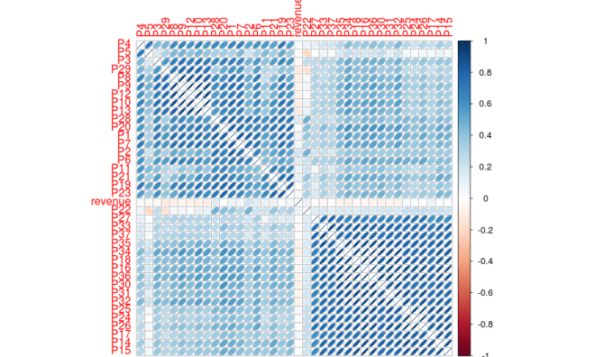
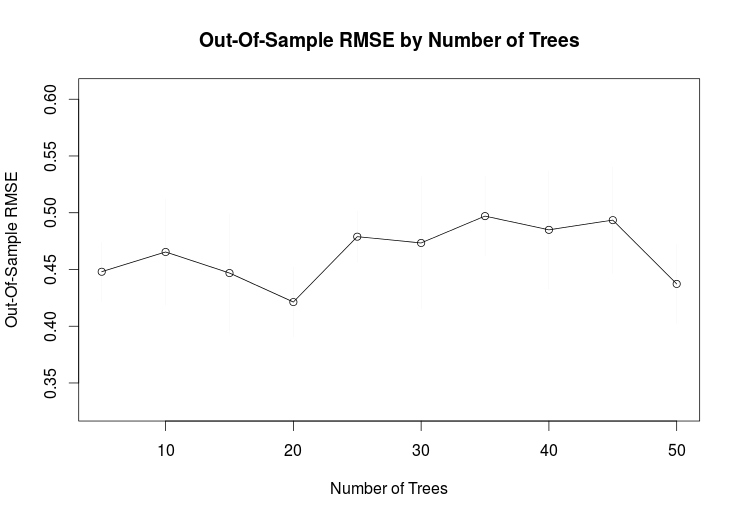
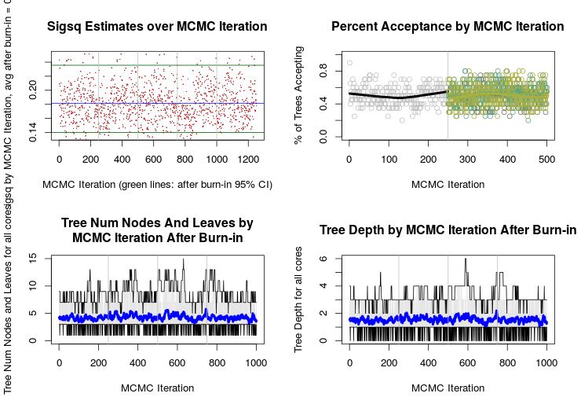
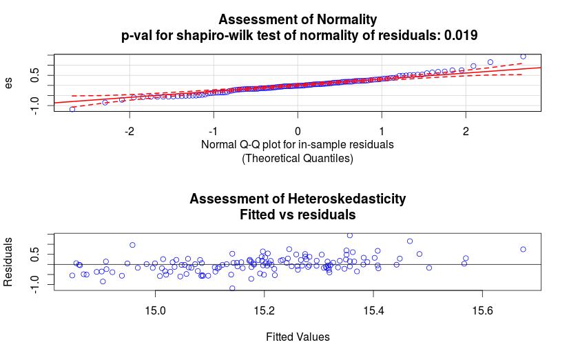
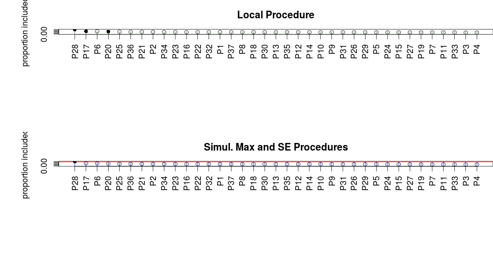
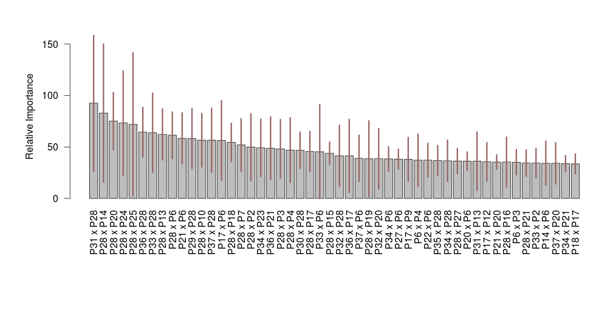

Restaurant Revenue Prediction with BART Machine
In this post, I’d like to show you how to use the newly written package onBayesian Additive Regression Treesi.e.BART Machine for Restaurant Revenue Prediction withR. The datasets are part of the passed Kaggle competition that can be found here.What is BART?BART is the Bayesian sibling of Random Forest. For some applications, Bayesian approaches with probabilistic assumptions work better than pure algorithmic ensemble of trees due to underlyingprior assumptions. BART utilizes prior assumptions for parameters estimate and splits that occur in classic tree models. There are multiple distinctions between BART and Random Forest. One is the user defined ability to set generalized Bernoulli priors on features to be selected for each split, whereas in Random Forest, this prior is uniform on features. The other ones are having multiple hyperparameters controlling the growth of trees more than Random Forest and the ability to findexplicit interactionsamong features, which can hardly be found in general Machine/Statistical learning algorithms/models.BART in actionSpeaking of competition, TFI has been one of the most unusual Kaggle competitions so far and has confused and hurt many contestants as well as myself because of the following reasons:
Great disparity among the number of training and testing samples. The training set has 137 samples with 37 obfuscated features out of 42 with therevenueas the response variable. The test set has 100,000 samples (poisoned data and robust model indications!).
It was very hard to get consistent cross-validation scores even with repeated CV.
Almost all of the features are weak and some are incompatible in train and test sets.Manyof the top seed Kaggle Masters did poorly in this competition which adds to its strangeness and perhaps if you knew less, you could have been more successful in this competition! So, let’s briefly look at the data first;
data <- read.csv('train.csv', sep=',', stringsAsFactor=F)
test <- read.csv('test.csv', sep=',', stringsAsFactor=F)
revenue <- data$revenue
train <- data[,-ncol(data)]
all <- rbind(train, test)As you go through exploringalldataset, you will figure out many odd cases, like the featureCity, the number of unique cities used in training set length(unique(data$City)) is 34 whereas the number of unique cities used in test set is 57. You can check the forum to see more odd cases. Of course, these cases could happen in real data science and everyone should now how to handle them. This post, however, does not deal with that kind of behaviors. By plotting the histogram ofrevenue, one can see its skewness easily, so the natural log(revenue) better demonstrates its (nearly) log normal distribution and perhaps suggests existence ofoutliers.
library(ggplot2)
qplot(log(data$revenue),
geom="histogram",
binwidth=0.1,
main="Histogram of Revenue",
xlab="revenue",
fill=I("red"),
col=I("black")) To plot the correlations among (numeric) features and the response, we can use the
To plot the correlations among (numeric) features and the response, we can use the corrplot package
library(corrplot)
correlations <- cor(data[,6:43])
corrplot(correlations, method="ellipse", order="hclust") Before going further, I’d like to emphasize that when the data is small, it’s very likely to find some seemingly good complicatedinteractionsamong features, for example, by looking at the p-values for a simple linear regression and by tweaking couple of significant ones, I found a (good-turn-out-to-be-useless) interaction between logRevenue~I(P6*P20)+P28+I(P28^2)+Age+I(Age^2) , includingAgeof the restaurant, which at the time, I thought it might be a good feature to add, but the deserved winner argued the opposite! Now, let’s dig into bartMachine. First, I’m going to throw out the incompatible features includingOpen.Date, City, City.Group, Typeas well asIdto make our training and testing sets unified and initialize the bartMachine as follows;
{kind=link}
SEED <- 123
set.seed(SEED)
options(java.parameters="-Xmx5000m") # must be set initially
library(bartMachine)
set_bart_machine_num_cores(4)
y <- log(revenue)
X <- all[1:nrow(train), -c(1,2,3,4,5)]
X_test <- all[(nrow(train)+1):nrow(all), -c(1,2,3,4,5)]
bart <- bartMachine(X, y, num_trees=10, seed=SEED) # default num_trees might be excessiveThe results are > bartMachine v1.2.0 for regression > training data n = 137 and p = 37 > built in 0.3 secs on 4 cores, 10 trees, 250 burn-in and 1000 post. samples > sigsq est for y beforehand: 0.159 > avg sigsq estimate after burn-in: 0.19178 > in-sample statistics: > L1 = 41.5 > L2 = 22.15 > rmse = 0.4 > Pseudo-Rsq = 0.2953 > p-val for shapiro-wilk test of normality of residuals: 0.08099 > p-val for zero-mean noise: 0.97545
We can also see the effect of changing the num_trees parameter by
rmse_by_num_trees(bart,
tree_list=c(seq(5, 50, by=5)),
num_replicates=5) So perhaps num_trees=20 works better with less out-of-sample error. As,bartMachineis essentially doing MCMC and heavily using Gibbs sampler, checking convergence seems necessary (see the above paper for more details);
{kind=link}
bart <- bartMachine(X, y, num_trees=20, seed=SEED)
plot_convergence_diagnostics(bart) We can also check mean-centeredness assumption and heteroskedasticity of the data by the QQ-plot
{kind=link}
check_bart_error_assumptions(bart) One of the main features of bartMachine is showing variable importance via permutation tests
{kind=link}
var_selection_by_permute(bart, num_reps_for_avg=20) Moreover, bartMachine is capable of finding explicit interactions among feature
{kind=link}
interaction_investigate(bart, num_replicates_for_avg=5) However, since we want a simple model to start and score well in the poisoned test set, focusing too much on interactions can hurt a lot, as happened to me by inevitable overfitting. Now, I’m going to pickP20, P17, P6and retrain my model and perform a CV and finally submit it.
{kind=link}
nX <- X[, c("P6", "P17", "P28")]
nX_test <- X_test[, c("P6", "P17", "P28")]
nbart <- bartMachine(nX, y, num_trees=20, seed=SEED)
nbart_cv <- bartMachineCV(nX, y, num_tree_cvs=c(10,15,20),
k_folds=5,
verbose=TRUE) # bartMachine CV win: k: 3 nu, q: 3, 0.9 m: 20
log_pred <- predict(nbart_cv, nX_test)
pred <- exp(log_pred)
submit <- data.frame(Id=test$Id, Prediction = pred)
write.csv(submit, file="bartMachine_P6P17P28.csv", row.names=F)The result of this submission, is 1731437.14026 in public and 1839841.77388 (ranks around700out of 2257 teams) in private leaderboards.
Rank below 100 out of 2257:
To improve our model and make it more robust, we should remove outliers by deciding what threshold to use perhaps with some trial-and-error first, though there’re many methods that can be helpful, which is not within the scope of this post. Looking at the log(revenue) distribution should suggest where you should put the threshold. Doing so, it can hugely boost your private leaderboard ranking to position around80with score 1786605.94364 which is a fairly good incentive to explore bartMachine more. You can find the codes including theimproved modeland plots in my github. Enjoy! P.S. During the competition, the BAYZ,M.D team managed to make aperfect overfiton the public leaderboard with interesting and creative methods. You can read more about that here.